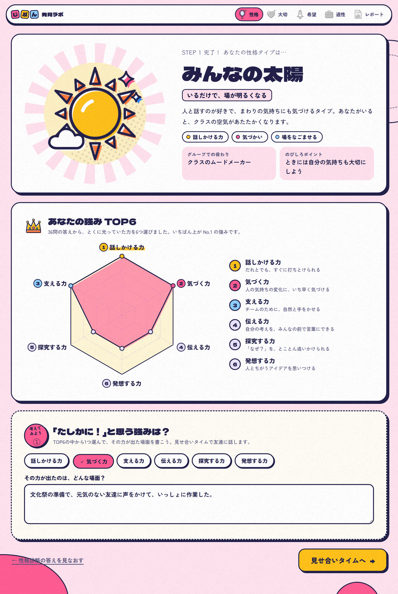
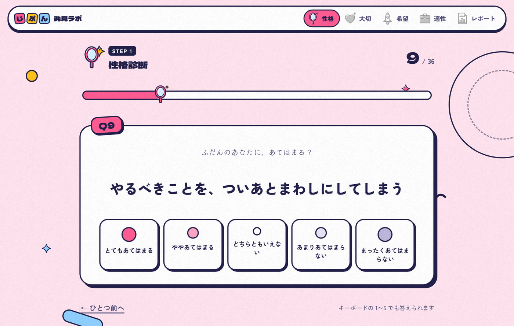
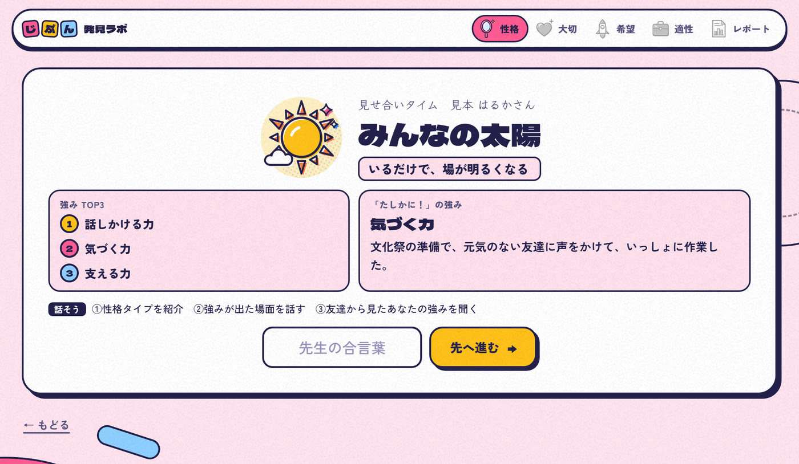
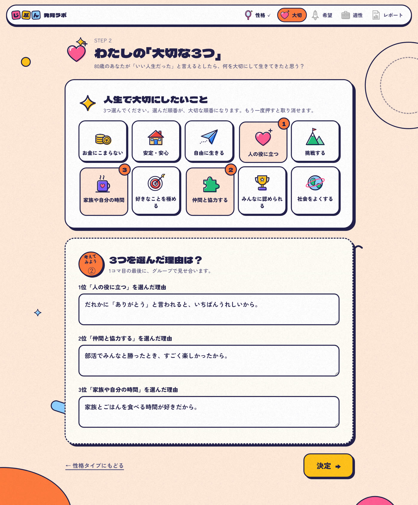
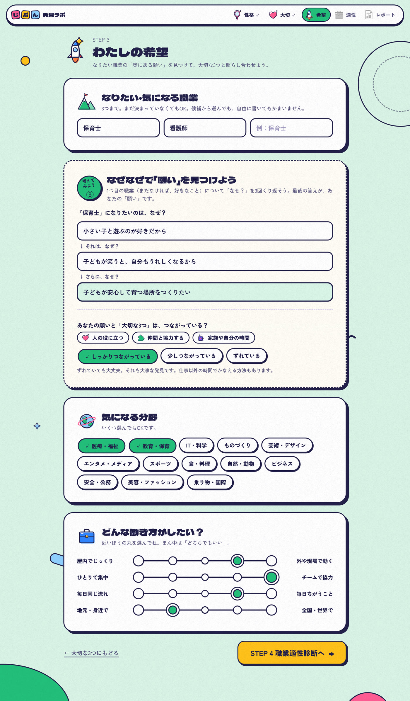
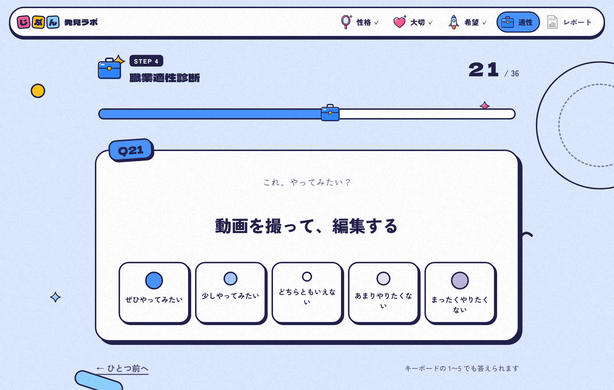
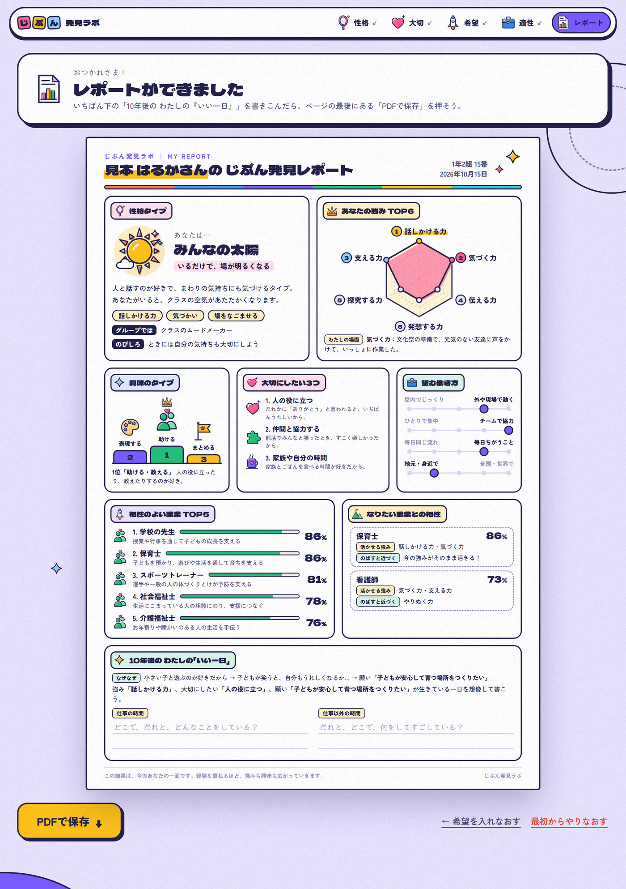

About
「自分を知る」から「将来を考える」へ
中学1年生の総合的な学習の時間で、自己理解とキャリア学習に取り組むためのアプリです。
「将来なにになりたい？」といきなり聞かれても、答えられる生徒は多くありません。じぶん発見ラボでは、まず自分の性格と強みを知り、次に人生で大切にしたいことを考え、そのうえでなりたい職業の奥にある「願い」と興味の方向を見つけていきます。
途中の「見せ合いタイム」で友達と結果を話し合いながら進み、最後はすべての結果がA4一枚のレポートにまとまります。キャリア・パスポートや三者面談の資料としても使えます。
🪞
STEP 1
性格診断
36問で性格タイプと強みTOP6
💗
STEP 2
大切な3つ
人生で大切にしたいことと、その理由
🚀
STEP 3
わたしの希望
なりたい職業と「なぜなぜ」
💼
STEP 4
職業適性診断
36問で興味のタイプとおすすめの職業
機能一覧
知る → 見せ合う → 考える → まとめる
4つのステップと2回の「見せ合いタイム」で進みます。答えは自動で保存されるので、次の時間に続きから再開できます。

「ふだんのあなたに、あてはまる？」という36の問いに5段階で答えると、16の性格タイプのどれに近いかと、12の力のうちとくに光っている強みTOP6がわかります。タイプにはイラストとキャッチコピー、グループでの役わり、のびしろポイントがつきます。結果を見たら、「たしかに！」と思う強みを1つ選び、その力が出た場面を書きます。

1問ずつ5段階で答える（キーボードの1〜5でも可）
16の性格タイプ「みんなの太陽」「たよれるキャプテン」「こだわり研究者」「縁の下のヒーロー」「ワクワク探検隊長」など、中学生がうれしくなる名前とイラストで返します。
12の力から、強みTOP6話しかける力・伝える力・気づく力・支える力・計画する力・やりぬく力・探究する力・発想する力・切りかえる力・落ち着く力・正直でいる力・わけへだてない力。上位6つをレーダーチャートで示します。
「たしかに！」の強みと場面診断結果をうのみにせず、自分の経験と結びつけて言葉にします。この場面がレポートの「わたしの場面」にのります。
正解のない問い「こうありたい」ではなく「ふだんの自分」に近いものを選ぶよう、はじめに伝えます。逆向きの質問もまぜて、答えのかたよりを減らしています。

STEP 1 と STEP 2 のあとに、結果を1枚にまとめた「見せ合いタイム」の画面が出ます。グループで画面を見せ合い、「話そう」の3つの順に話します。次へ進むには先生の合言葉が必要なので、早く終わった生徒だけが先へ進んでしまうことがなく、クラス全員で対話の時間をとれます。
話す順番が画面に出ている①性格タイプを紹介 ②強みが出た場面を話す ③友達から見たあなたの強みを聞く。何を話せばよいかで止まりません。
合言葉で全員そろって先へ合言葉は2つ。下の「先生向けメモ」にまとめています。ひらがな・カタカナどちらで入れても通ります。
2回目は「大切な3つ」を見せ合う選んだ3つと理由を並べて表示。「1コマ目はここまで！」の区切りにもなっています。

「80歳のあなたが『いい人生だった』と言えるとしたら、何を大切にして生きてきたと思う？」という問いから、10の価値観の中で大切なものを順番に3つ選び、それぞれの理由を書きます。仕事を考える前に「自分にとって何が大事か」を言葉にしておくことで、後のステップで職業を見るときの軸になります。
10の価値観
お金にこまらない安定・安心自由に生きる人の役に立つ挑戦する家族や自分の時間好きなことを極める仲間と協力するみんなに認められる社会をよくする
選んだ順番が大切な順番押した順に1位・2位・3位になります。もう一度押すと取り消せます。
理由の書き方の例つき「家族が笑っているとき、自分もいちばんうれしいから」のような例が入力欄に出るので、書き出しやすくなっています。

なりたい・気になる職業を3つまで書き、1つ目について「なぜ？」を3回くり返します。「動物が好きだから」→「動物が元気になると、自分もうれしいから」→「弱っている命を助けられる人になりたい」のように、最後にたどりついた答えが、その職業の奥にある「願い」です。その願いが「大切な3つ」とつながっているかも確かめます。
職業名は自由に書いてOK「ユーチューバー」「お医者さん」「ほいくえんのせんせい」など、ひらがなや言いかえでも65の職業に結びつけて、相性を出します。まだ決まっていなくても進めます。
願いと「大切な3つ」のつながり「しっかりつながっている／少しつながっている／ずれている」から選びます。ずれていても大丈夫──仕事以外の時間でかなえる方法もある、と伝えます。
気になる分野（13）と、望む働き方（4つの軸）医療・福祉、IT・科学、ものづくり、芸術・デザインなど13分野から選び、「屋内でじっくり⇔外や現場で動く」「ひとりで集中⇔チームで協力」「毎日同じ流れ⇔毎日ちがうこと」「地元・身近で⇔全国・世界で」の4つの軸で働き方を選びます。

「動画を撮って、編集する」「こわれたおもちゃや自転車を、自分で直してみる」など、やってみたいかどうかを36の活動で答えます。ホランドの職業興味の考え方（RIASEC）を参考にした6つの興味のタイプで、自分の興味の方向がわかります。
Rつくる・動かす手や体を使って、ものを作ったり直したりするのが好き
Iしらべる・考える「なぜ？」を調べたり、じっくり考えたりするのが好き
A表現する絵や音楽、文章で、自分らしさを表すのが好き
S助ける・教える人の役に立ったり、教えたりするのが好き
Eまとめる・挑む人を引っぱり、目標に向かって進めるのが好き
Cととのえる情報やものを整理して、正確に進めるのが好き
職業との相性の出し方：65の職業それぞれについて、5つの観点を次の割合で合わせて相性（％）を出しています。興味をいちばん重く見ていますが、性格・大切な3つ・働き方・分野も反映されます。
興味のタイプ（STEP 4）52%
性格（STEP 1）15%
大切な3つ（STEP 2）12%
望む働き方（STEP 3）12%
気になる分野（STEP 3）9%

4つのステップの結果が、A4一枚のレポートに自動でまとまります。最後に「10年後の わたしの『いい一日』」を、強み・大切にしたいこと・願いが生きている一日として想像して書きこみ、PDFで保存します。印刷してキャリア・パスポートにはさんだり、三者面談で家庭と共有したりできます。
レポートにのる内容性格タイプ／強みTOP6とレーダーチャート・わたしの場面／興味のタイプ（上位3つ）／大切にしたい3つと理由／望む働き方／相性のよい職業TOP5／なりたい職業との相性（活かせる強み・のばすと近づく力）／なぜなぜと「願い」／10年後のいい一日
なりたい職業との相性自分で書いた職業について、相性（％）と「活かせる強み」「のばすと近づく力」を表示。向いていないと決めつけるのではなく、何をのばせば近づけるかを示します。
ワンクリックでPDF保存「PDFで保存」を押すと、名前入りのファイル（じぶん発見レポート_名前.pdf）がダウンロードされます。
「今のあなたの一面」としてレポートの最後に「この結果は、今のあなたの一面です。経験を重ねるほど、強みも興味も広がっていきます」と記し、結果で将来をしばらないようにしています。
授業での使い方
2コマで、自己理解からレポートまで
中学1年・総合的な学習の時間で、2コマ（50分×2）を想定した流れです。答えはその端末のブラウザに自動保存されるので、2コマ目は続きから再開できます。
1コマ目 自分を知る
- 名前と組・番号を入れてスタートレポートにのります。
- STEP 1 性格診断（36問）性格タイプと強みTOP6。「たしかに！」の強みと場面を書く。
- 見せ合いタイム①グループで性格タイプと強みを紹介し合う。先生の合言葉で次へ。
- STEP 2 大切な3つ10の価値観から3つと、その理由。
- 見せ合いタイム②大切な3つを見せ合って、1コマ目は終了。
2コマ目 将来を考える
- 「つづきから再開」前の時間と同じ端末・同じブラウザで開く。
- STEP 3 わたしの希望なりたい職業・なぜなぜで「願い」・分野・働き方。
- STEP 4 職業適性診断（36問）興味のタイプと、相性のよい職業。
- レポートを読み、10年後の「いい一日」を書く強み・大切な3つ・願いがそろった一日を想像する。
- PDFで保存して提出・印刷キャリア・パスポートや三者面談の資料に。
👩🏫 先生向けメモ（合言葉・保存のしくみ）
| 見せ合いタイム①の合言葉 | つよみ（STEP 1 のあと → STEP 2 へ） |
|---|---|
| 見せ合いタイム②の合言葉 | みらい（STEP 2 のあと → STEP 3 へ） |
- 合言葉は、ひらがな・カタカナのどちらで入力しても通ります。生徒に見えないよう、合図のタイミングで口頭で伝えてください。
- 答えはその端末の、そのブラウザの中だけに保存されます。別の端末やブラウザで開くと続きから再開できません。シークレットモード（プライベートブラウズ）では、閉じると消えます。
- 1台の端末を複数の生徒で使う場合は、レポートをPDFで保存したあと「最初からやりなおす」を押して、前の生徒の答えを消してから交代してください。
- 名前は本名でなくても使えます。レポートとPDFのファイル名にのるだけで、どこにも送信されません。
技術仕様
| 項目 | 内容 |
|---|---|
| 対象 | 中学1年生（総合的な学習の時間・特別活動・キャリア教育）／2コマ想定 |
| 構成 | HTML / CSS / JavaScript の1ファイル（フレームワーク不使用） |
| 性格診断 | 36問・5段階／6つの特性・12の力／16の性格タイプ |
| 職業適性診断 | 36問・5段階／6つの興味のタイプ（RIASEC）／65の職業（言いかえ・ひらがなでも認識） |
| そのほかの入力 | 大切な3つ（10の価値観）・なりたい職業3つまで・なぜなぜ・気になる分野13・働き方4軸・10年後のいい一日 |
| レポート | A4一枚。html2canvas と jsPDF でPDFを作成し、端末に保存 |
| データ保存 | 端末のブラウザ（localStorage）のみ。サーバーへの送信はありません |
| 推奨環境 | Google Chrome / Microsoft Edge / Safari の最新版（Chromebook・iPad・PC） |